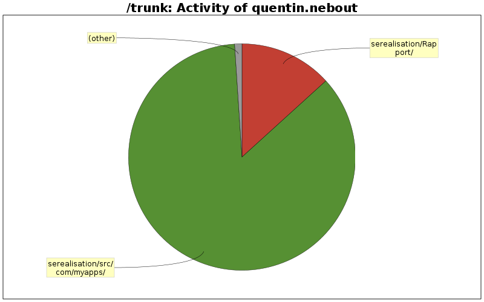

| Directory | Changes | Lines of Code | Lines per Change |
|---|---|---|---|
| Totals | 35 (100.0%) | 1539 (100.0%) | 43.9 |
| serealisation/src/com/myapps/ | 21 (60.0%) | 1319 (85.7%) | 62.8 |
| serealisation/Rapport/ | 6 (17.1%) | 204 (13.3%) | 34.0 |
| serealisation/res/values-fr/ | 2 (5.7%) | 5 (0.3%) | 2.5 |
| serealisation/res/values-en/ | 2 (5.7%) | 4 (0.3%) | 2.0 |
| serealisation/res/values-de/ | 2 (5.7%) | 4 (0.3%) | 2.0 |
| serealisation/res/values-es/ | 2 (5.7%) | 3 (0.2%) | 1.5 |

Ajout changement état 'Activer/Désactiver contrôles avancés' + bouton snapshot inactif si aucune résolution dispo
4 lines of code changed in 1 file:
Rapport partie ControleCamera + Modifs string.xml
82 lines of code changed in 6 files:
Controle caméra (à mettre en forme latex)
43 lines of code changed in 1 file:
Parties rapport : listing besoins + existant à remplir + controle camera
54 lines of code changed in 3 files:
Plan du rapport
37 lines of code changed in 1 file:
Ajout état bouton + bouton "Arrêter" sur la MD + vérif état connexion au départ
(à tester pour la MD car problème de wifi...)
55 lines of code changed in 5 files:
Chargement de la config + état des boutons
386 lines of code changed in 2 files:
Bribes de MotionDetection... + Correction doublon AUTO_IR/AUTOIR
93 lines of code changed in 3 files:
Amélioration des fonctions onTouch => valeurs obtenues en log cohérentes, à tester maintenant sur streaming caméra
60 lines of code changed in 2 files:
Implémentation TouchListener + Récupération d'informations sur CameraControl (résolutions/rotations/formats)
187 lines of code changed in 3 files:
Début implémentation TouchListener
82 lines of code changed in 2 files:
Changement loadConfig()
97 lines of code changed in 1 file:
Ajout gestion des fonctionnalités sur CameraControl
251 lines of code changed in 2 files:
Ajout fonctions CameraControl
39 lines of code changed in 1 file:
Ajout CameraControl
69 lines of code changed in 2 files: